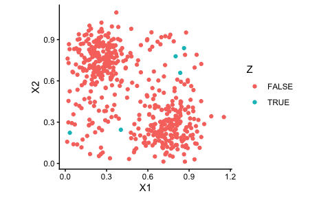

This package implements the Caliper Synthetic Matching approach, which is a blend of radius matching using distance metrics put on the covariate distribution itself, and the synthetic control method. In particular, it identifies sets of units local to each treated unit in turn, and then makes a synthetic control for each treated unit using those local units.
Details can be found on the paper: Che et. al. (2024), Caliper Synthetic Matching
The GitHub repo also has replication materials for the associated paper in the scripts directory; see below for further discussion of this added-on code. The installed package will ignore scripts.
Installation
You can install the development version of CSM from GitHub with:
Quick demo of package
We generate a small toy dataset to illustrate the main methods of interest:
set.seed( 4044440 )
dat <- gen_one_toy(nt = 5)
dat
#> # A tibble: 505 × 11
#> X1 X2 Z noise Y0_denoised Y0 Y1_denoised Y1 Y
#> <dbl> <dbl> <lgl> <dbl> <dbl> <dbl> <dbl> <dbl> <dbl>
#> 1 0.404 0.244 TRUE 0.131 5.05 5.18 7.00 7.13 7.13
#> 2 0.0330 0.223 TRUE 0.215 4.70 4.91 5.46 5.68 5.68
#> 3 0.863 0.838 TRUE -0.00439 4.95 4.95 10.1 10.0 10.0
#> 4 0.835 0.658 TRUE -0.0932 4.93 4.84 9.41 9.32 9.32
#> 5 0.802 0.779 TRUE -0.128 5.06 4.93 9.80 9.67 9.67
#> 6 0.653 0.227 FALSE 0.321 4.22 4.54 6.86 7.18 4.54
#> 7 0.805 0.135 FALSE -0.682 3.03 2.34 5.84 5.16 2.34
#> 8 0.802 0.386 FALSE 0.606 4.26 4.86 7.82 8.43 4.86
#> 9 0.709 0.137 FALSE -0.0348 3.51 3.48 6.05 6.01 3.48
#> 10 1.06 0.342 FALSE 0.0267 2.72 2.75 6.93 6.96 2.75
#> # ℹ 495 more rows
#> # ℹ 2 more variables: Y_denoised <dbl>, id <int>
ggplot( dat, aes( X1, X2, color = Z ) ) + geom_point() +
coord_fixed()
To calculate matches, call get_cal_matches()–it will match, make synthetic controls for each unit, and give you a final dataset back, stored as an csm_matches object:
mtch <- get_cal_matches( dat,
form = Z ~ X1 + X2,
metric = "maximum",
scaling = c( 1/0.2, 1/0.2 ),
caliper = 1,
rad_method = "adaptive",
est_method = "csm" )
mtch
#> csm_matches: matching with "maximum" distance and "adaptive" radii
#> aggregating sets with "csm" method
#> match covariates: X1, X2
#> 5 treated units matched to 91 of 500 control units
#> (0 exact matches, 5 below caliper, 0 above caliper)
#> Adaptive calipers: 1, 1, 1, 1, 1
#> Target caliper = 1
#> Max distance ranges 0.962 - 0.983
#> scaling: 5, 5There are a variety of things you can pull from the result. You can get a list of statistics on the treated units:
mtch$treatment_table
#> # A tibble: 5 × 9
#> id subclass nc ess min_dist max_dist adacal feasible matched
#> <chr> <chr> <dbl> <dbl> <dbl> <dbl> <dbl> <dbl> <dbl>
#> 1 1 1 38 2.83 0.365 0.975 1 1 1
#> 2 2 2 20 1.79 0.303 0.975 1 1 1
#> 3 3 3 13 1.86 0.243 0.962 1 1 1
#> 4 4 4 23 2.16 0.245 0.983 1 1 1
#> 5 5 5 24 2.57 0.344 0.972 1 1 1You can see all the units used, grouped by subclass:
result_table(mtch, nonzero_weight_only = TRUE )
#> # A tibble: 20 × 15
#> id X1 X2 Z noise Y0_denoised Y0 Y1_denoised Y1 Y
#> <chr> <dbl> <dbl> <lgl> <dbl> <dbl> <dbl> <dbl> <dbl> <dbl>
#> 1 1 0.404 0.244 TRUE 0.131 5.05 5.18 7.00 7.13 7.13
#> 2 86 0.585 0.129 FALSE -0.271 4.04 3.77 6.18 5.91 3.77
#> 3 351 0.258 0.0667 FALSE 0.00759 4.76 4.76 5.73 5.74 4.76
#> 4 417 0.356 0.425 FALSE -0.0132 5.24 5.23 7.58 7.57 5.23
#> 5 2 0.0330 0.223 TRUE 0.215 4.70 4.91 5.46 5.68 5.68
#> 6 419 0.0223 0.298 FALSE -0.135 4.52 4.39 5.49 5.35 4.39
#> 7 444 0.0137 0.157 FALSE 0.427 4.70 5.13 5.21 5.64 5.13
#> 8 482 0.102 0.418 FALSE 0.191 4.54 4.73 6.10 6.29 4.73
#> 9 3 0.863 0.838 TRUE -0.00439 4.95 4.95 10.1 10.0 10.0
#> 10 359 0.671 0.885 FALSE 0.438 4.80 5.24 9.47 9.90 5.24
#> 11 368 0.871 0.789 FALSE -0.462 4.95 4.49 9.93 9.47 4.49
#> 12 445 0.878 0.951 FALSE 0.104 4.79 4.89 10.3 10.4 4.89
#> 13 4 0.835 0.658 TRUE -0.0932 4.93 4.84 9.41 9.32 9.32
#> 14 31 0.649 0.495 FALSE -0.784 5.14 4.35 8.57 7.79 4.35
#> 15 423 0.954 0.790 FALSE 0.386 4.75 5.13 9.98 10.4 5.13
#> 16 436 0.911 0.462 FALSE -0.359 4.05 3.69 8.17 7.81 3.69
#> 17 5 0.802 0.779 TRUE -0.128 5.06 4.93 9.80 9.67 9.67
#> 18 158 0.814 0.609 FALSE -0.238 4.91 4.67 9.18 8.94 4.67
#> 19 445 0.878 0.951 FALSE 0.104 4.79 4.89 10.3 10.4 4.89
#> 20 455 0.626 0.952 FALSE 0.00664 4.43 4.44 9.17 9.18 4.44
#> # ℹ 5 more variables: Y_denoised <dbl>, dist <dbl>, subclass <chr>, unit <chr>,
#> # weights <dbl>You can filter to only matches within the initial caliper:
result_table( mtch, feasible_only = TRUE )
#> # A tibble: 123 × 15
#> id X1 X2 Z noise Y0_denoised Y0 Y1_denoised Y1 Y
#> <chr> <dbl> <dbl> <lgl> <dbl> <dbl> <dbl> <dbl> <dbl> <dbl>
#> 1 1 0.404 0.244 TRUE 0.131 5.05 5.18 7.00 7.13 7.13
#> 2 18 0.538 0.320 FALSE -0.0744 4.99 4.91 7.56 7.48 4.91
#> 3 39 0.596 0.245 FALSE -0.541 4.53 3.99 7.05 6.51 3.99
#> 4 57 0.532 0.254 FALSE -0.769 4.79 4.02 7.14 6.37 4.02
#> 5 86 0.585 0.129 FALSE -0.271 4.04 3.77 6.18 5.91 3.77
#> 6 100 0.538 0.352 FALSE 0.125 5.07 5.20 7.74 7.87 5.20
#> 7 120 0.502 0.286 FALSE -0.316 4.97 4.66 7.34 7.02 4.66
#> 8 124 0.578 0.181 FALSE 0.431 4.32 4.75 6.60 7.03 4.75
#> 9 133 0.578 0.154 FALSE 0.520 4.19 4.71 6.39 6.91 4.71
#> 10 140 0.578 0.419 FALSE -0.400 5.14 4.74 8.13 7.73 4.74
#> # ℹ 113 more rows
#> # ℹ 5 more variables: Y_denoised <dbl>, dist <dbl>, subclass <chr>, unit <chr>,
#> # weights <dbl>You can also get the final generated result as a data.frame by casting the result into a dataframe:
head( as.data.frame( mtch ), n = 10 )
#> # A tibble: 10 × 15
#> id X1 X2 Z noise Y0_denoised Y0 Y1_denoised Y1 Y
#> <chr> <dbl> <dbl> <lgl> <dbl> <dbl> <dbl> <dbl> <dbl> <dbl>
#> 1 1 0.404 0.244 TRUE 0.131 5.05 5.18 7.00 7.13 7.13
#> 2 18 0.538 0.320 FALSE -0.0744 4.99 4.91 7.56 7.48 4.91
#> 3 39 0.596 0.245 FALSE -0.541 4.53 3.99 7.05 6.51 3.99
#> 4 57 0.532 0.254 FALSE -0.769 4.79 4.02 7.14 6.37 4.02
#> 5 86 0.585 0.129 FALSE -0.271 4.04 3.77 6.18 5.91 3.77
#> 6 100 0.538 0.352 FALSE 0.125 5.07 5.20 7.74 7.87 5.20
#> 7 120 0.502 0.286 FALSE -0.316 4.97 4.66 7.34 7.02 4.66
#> 8 124 0.578 0.181 FALSE 0.431 4.32 4.75 6.60 7.03 4.75
#> 9 133 0.578 0.154 FALSE 0.520 4.19 4.71 6.39 6.91 4.71
#> 10 140 0.578 0.419 FALSE -0.400 5.14 4.74 8.13 7.73 4.74
#> # ℹ 5 more variables: Y_denoised <dbl>, dist <dbl>, subclass <chr>, unit <chr>,
#> # weights <dbl>You can estimate impacts on the matched dataset using whatever tools you want. The option discussed in our paper is implemented as so:
estimate_ATT( mtch )
#> # A tibble: 1 × 12
#> ATT SE N_T N_C ESS_C sigma_hat V_E p_drop S0_sq S1_sq cov_w_s
#> <dbl> <dbl> <int> <int> <dbl> <dbl> <dbl> <dbl> <dbl> <dbl> <dbl>
#> 1 3.62 0.249 5 14 10.1 NA 0.0618 0 0.200 0.210 -0.00256
#> # ℹ 1 more variable: t <dbl>